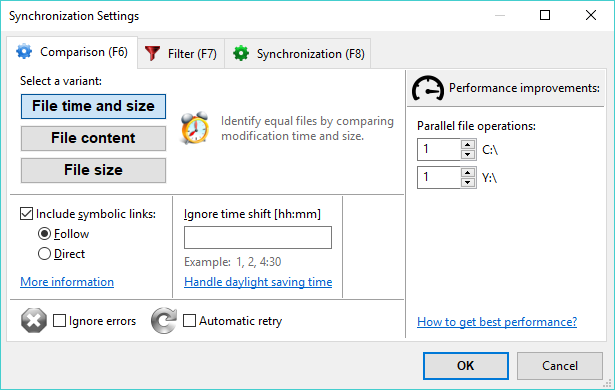

When comparing two folders, FreeFileSync analyses the paths relative to the left and right base folders of the contained files. If the relative path matches, FreeFileSync decides how the file pair is categorized by considering the selected comparison variant:
I. Compare by File time and sizeThis variant considers two files equal when both modification time and file size match. It should be selected when synchronizing files with a backup location. Whenever a file is changed, its file modification time is also updated. Therefore, a comparison by File Time and size will detect all files that should be synchronized. The following categories are distinguished:
Two files are marked as equal if they have identical content. This variant should be selected when doing consistency checks to see if the files on both sides are bit-wise identical. Naturally, it is the slowest of all comparison variants, so its usefulness for the purpose of synchronization is limited. If used for synchronization, it can serve as a fallback when modification times are not reliable. For example certain mobile phones and legacy FTP servers do not preserve modification times, so the only way to detect different files when the file sizes are the same is by reading their content.
Two files are considered equal if they have the same file size. Since it's possible for files that have the same size to have different content, this variant should only be used when file modification times are not available or reliable, e.g. in certain MTP and FTP synchronization scenarios, and where a comparison by content would be too slow.
FreeFileSync lets you choose to include symbolic links (also called symlinks or soft links) when scanning directories rather than skipping over them. When included, you can select between two ways to handle them: